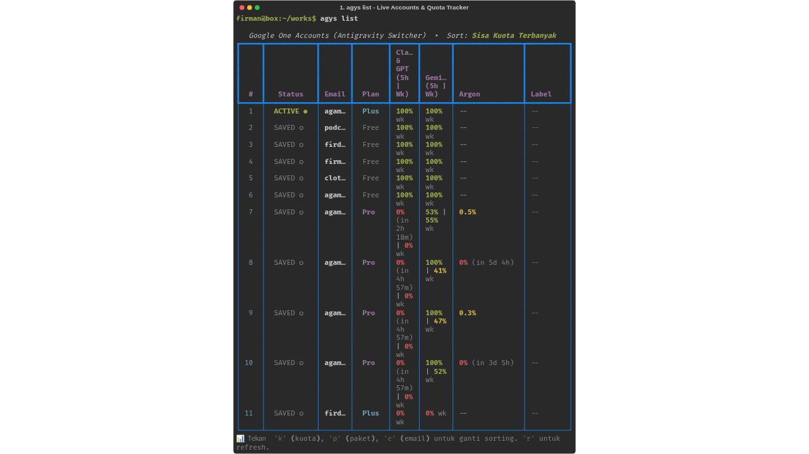

Never Hit a Rate Limit Again.
Switch Google Accounts in 1s.
The essential companion tool for Google Antigravity CLI (agy). Seamlessly switch accounts without browser re-logins, automatically select accounts with the highest 5-hour quota, guard against multi-terminal collisions, and resume your active tasks instantaneously.
Compatible with Linux & macOS • Python 3.9+ • Zero telemetry
Visual Showcase
Experience Antigravity Switcher in Action
Switch accounts, monitor Claude & Gemini 5-hour cooldown timers, and resume conversations without losing context.

The Agony of Native agy Limits
- ✕ Frequent 5-Hour Rate Limits: Claude 3.5 Sonnet & GPT quotas hit lockouts during intensive coding sessions.
- ✕ Single-Account Bottleneck: Switching accounts natively requires deleting OS credentials and completing the web OAuth dance every time.
-
✕
Multi-Terminal Collisions: Running
agy -cblindly loads whichever conversation touched disk last, corrupting context in other terminals.
The Antigravity Switcher Remedy
- ✔ 1-Second Instant Swap: Hot-swaps credentials in system keyring with zero browser intervention.
- ✔ Real-Time 9Router Quota Tracking: Live progress bars and countdown timers for Claude, Gemini, and Argon pools.
-
✔
The 2-Step Magic (
agyr): Exit the rate-limited chat, runagyr, and instantly resume on the account with the most quota!
Capabilities
Engineered for Heavy Pair-Programming
Instant Credential Swap
Switch active tokens in Linux SecretService or macOS Keychain in under a second. Never log out or wait for OAuth browser redirects again.
Live 9Router Quota Dashboard
Monitor 5-hour session limits and weekly allowances for Claude 3.5 Sonnet, GPT, Gemini, and Gemini 4 Argon with precise reset countdowns.
Smart Auto-Best Selection
One command (agys auto) evaluates all connected accounts and activates whichever currently has the highest remaining quota pool.
Collision-Free Multi-Terminal
Inspects active PTY sessions (● pts/2, ● pts/3) so you never accidentally hijack another terminal's active workspace.
Desktop Reset Notifications
Built-in background daemon notifies you via notify-send the exact minute an exhausted Google One Pro account resets its 5-hour quota.
Sub-Millisecond Statusline
Reads local SQLite cache in < 1ms. Embed live account and quota indicators directly into your Tmux statusbar or Zsh RPROMPT without lag.
Hit a 5-Hour Rate Limit? Recover in 2 Seconds.
Type /exit or press Ctrl + D
agyrAutomatically switches to the highest-quota account and resumes your exact conversation with permissions bypassed!
Installation
Up and Running in 30 Seconds
Run this one-liner in your terminal to automatically download the binary, configure dependencies, and setup shell aliases:
curl -fsSL https://raw.githubusercontent.com/agambondan/antigravity-switcher/main/install.sh | bash
Clone the repository and run the local install script:
~/.local/bin/ and registers convenient shell aliases (agyr, agys).
CLI Cheatsheet
Essential Commands Reference
| Command | Purpose | Flags / Usage |
|---|---|---|
| agys | Open interactive Rich TUI menu with hotkeys | Interactive |
| agyr | Auto-switch to account with most quota & resume conversation | Shortcut for agys auto -c |
| agys list | Show table of all saved accounts, plan tiers, and quotas | -s quota|plan|email |
| agys usage | Live visual quota progress bar tracker with timers | Alias: agys quota |
| agys auto | Auto-detect and switch to account with highest available quota | -c to resume chat |
| agys use <acc> | Switch immediately to account by index number or email | agys use 2 or agys use user@gmail.com |
| agys daemon start | Run background watcher with desktop notifications on quota reset | agys daemon status|stop |
| agys statusline | Sub-millisecond statusline string for Tmux & Zsh prompt | --tmux, --plain |
FAQ
Frequently Asked Questions
Are my Google account credentials and passwords safe? ▾
Yes, 100%. Antigravity Switcher never asks for or stores your Google passwords. It only handles OAuth refresh tokens managed securely in your operating system's native keyring (SecretService / DBus on Linux, macOS Keychain) with strict 0700 filesystem permissions.
How does it detect and track rate limits? ▾
It interfaces directly with the local 9Router API endpoint to read remaining percentages, cooldown countdowns, and quota limits for Claude & GPT, Gemini, and Gemini 4 Argon.
How does collision prevention work across multiple terminals? ▾
It scans Linux PTY devices (/proc/*/fd and active pseudo-terminals) for running Antigravity processes. Any conversation currently locked by another terminal window is flagged with its PTY (e.g. ● pts/2) so you never accidentally hijack someone else's active task.
How do I add a new Google account? ▾
Simply run agys add or press a in the interactive menu. It initiates a standard Antigravity login flow and saves the profile to your local switcher vault.